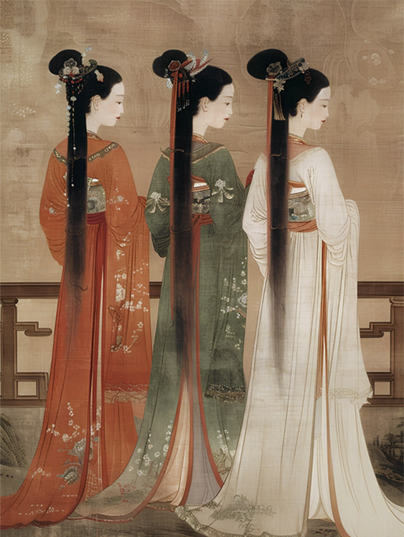
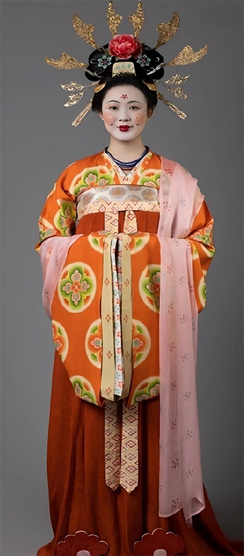
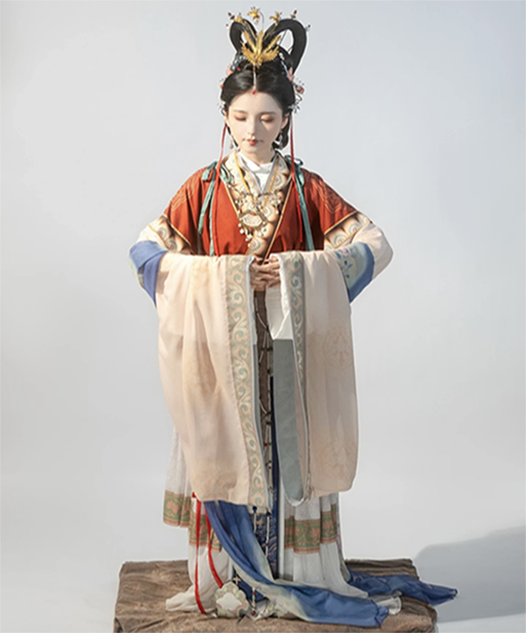

华夏衣裳，唐制汉服知多少
- 
-
眉形多样（远山眉、蛾眉）；花钿（额
间贴金箔或彩纸）、斜红（太阳穴画红
色装饰）是标志性元素。发髻：高髻盛
行，如“云髻”“双鬟望仙髻”，搭配金簪、
步摇、翠翘等头饰，晚唐出现夸张的“义
髻”（假发）。
男性服饰特点
1. 官服制度
颜色等级：三品以上紫袍，四品深绯
，五品浅绯，六品深绿，七品浅绿，八
品深青，九品浅青。章纹与配饰：官员
佩戴“鱼符”（身份凭证），腰系革带，饰
以玉、金、银銙（带板）。幞头：由头
巾演变而来，初唐软裹，晚唐定型为硬
质乌纱帽，两脚为“展角”或“交脚”。
2. 日常服饰
圆领袍：受胡服影响，窄袖、右衽，
官员与平民通用，常以织锦镶边。缺骻
袍：两侧开衩，便于骑马，反映游牧文
化影响。平民服饰：以麻布、葛布为主
，短衣长裤，颜色朴素（白、褐、黑）
。
- 
-
唐朝（618-907年）是中国历史上经济繁荣、文化开放的
时代，其服饰风格以雍容华贵、兼容并蓄著称，既承袭了
汉魏传统，又融合了西域、中亚等外来文化元素。唐代经
济繁荣、丝路畅通，外来文化与中原传统碰撞融合，服饰
呈现出兼容并蓄的风格。
整体风格与历史背景:
1. 开放性与多样性
唐朝国力强盛，丝路贸易繁荣，与波斯、印度、突厥等
地的文化交流频繁，服饰风格呈现多元融合的特点，尤其
受到胡服（北方游牧民族服饰）的深刻影响。
2. 阶级与场合差异
服饰等级分明，但中晚唐后逐渐宽松。官服严格遵循礼
制，日常服饰则更追求个性化，女性尤其注重装饰。
男女性服饰特点
女性服饰特点
-
1. 典型款式
襦裙服：上襦（短衣）下裙，搭配帔帛（长
丝巾），是唐代女性最常见的装束。 襦：短上
衣，领口多变（圆领、方领、直领、鸡心领），
袖口宽大。裙：高腰及胸，裙长曳地，多用六幅
布拼接（象征“六六大顺”），颜色鲜艳（红、紫
、黄为主）。帔帛：轻薄的丝质长巾，披于肩背
，行走时飘逸灵动。半臂：短袖外衣，常套在襦
外，贵族女性多饰以刺绣或织锦。男装风尚：受
武则天时期女性地位提升影响，宫廷女子流行穿
男装（圆领袍、革带、胡帽），体现洒脱之风。
-
2. 装饰与纹样
纹样题材：宝相花（抽象化莲花）、联珠纹、
卷草纹、瑞兽（孔雀、鸳鸯）、西域风格的几何
纹样。刺绣与印染：采用“夹缬”“蜡缬”等工艺，
色彩绚丽；金线、银线刺绣彰显奢华。
-
3. 妆容与发饰
妆容：流行浓艳风格，如“酒晕妆”（大面积
腮红）、“桃花妆”；
-

胡服与外来影响
1. 胡服元素
翻领对襟：受波斯影响，领口翻折，衣
身紧窄。 蹀躞带：皮质腰带挂小环，可佩
刀、荷包等，原为游牧民族实用设计。帷帽
：女性骑马时佩戴的宽檐帽，垂纱至肩，源
自西域。
2.佛教与丝路文化
菩萨形象的帔帛、璎珞装饰影响贵族女性装扮；
丝绸之路上传入的联珠纹、狮子纹
广泛用于织物。
-
五、材质与工艺
1. 丝绸为主
高级衣料：锦（彩色提花）
、绫（斜纹）、罗（镂空透孔
）、纱（轻薄如雾）。特殊工
艺：泥金银印花、贴金绣、缂
丝（通经断纬）技术成熟。2.
平民衣料:麻布、葛布、毛毡，
中晚唐后棉布逐渐普及。
六、特殊场合服饰
1. 婚礼服饰
新娘穿“钿钗礼衣”，青质深
衣，头戴金银花钗；新郎穿绛
色公服。2.舞乐服饰
《霓裳羽衣舞》中的舞者衣
裙缀羽毛，肩披霞帔；胡旋舞
者穿锦缎窄袖袍，腰系银带。
七、时代演变
初唐：简约清雅，服饰线条流
畅，色彩淡雅。盛唐：华丽张
扬，宽袖大裙，纹样繁复，女
性袒露脖颈（如“半露胸式”襦
裙）。中晚唐：回归保守，衣
袖渐窄，帔帛缩短，官服制度
进一步细化。
八、文化意义
唐朝服饰不仅是身份地位的象
征，更体现了开放包容的时代
精神。其华丽风格影响了日本
平安时代服饰（如“十二单”）
，并通过丝路传播至中亚，成
为中华文化输出的重要载体。